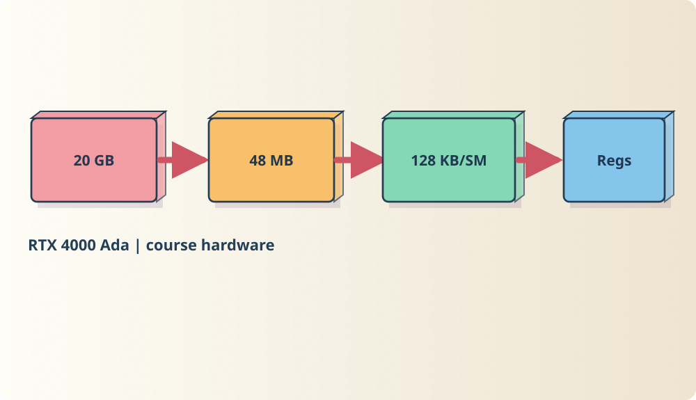
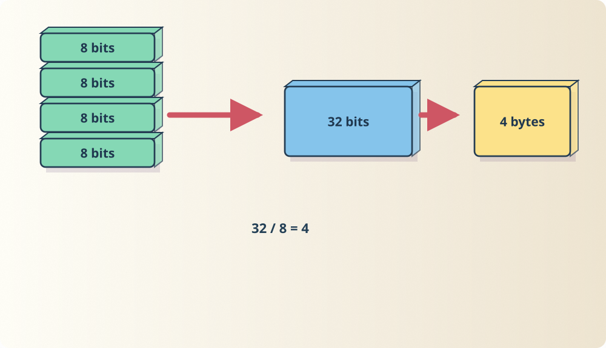
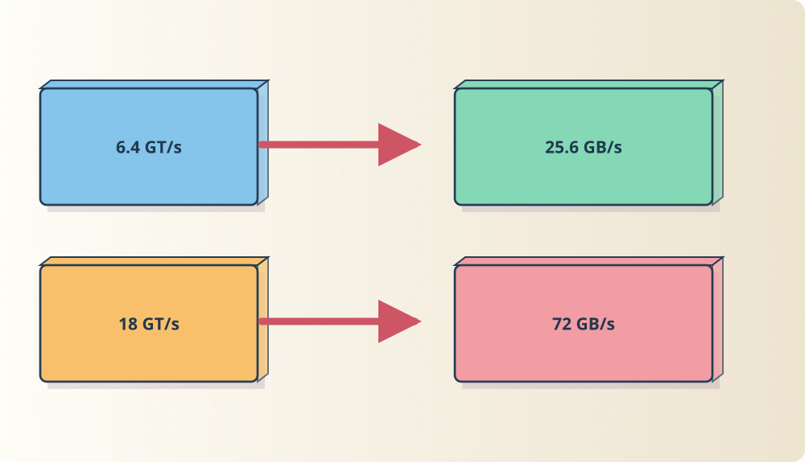
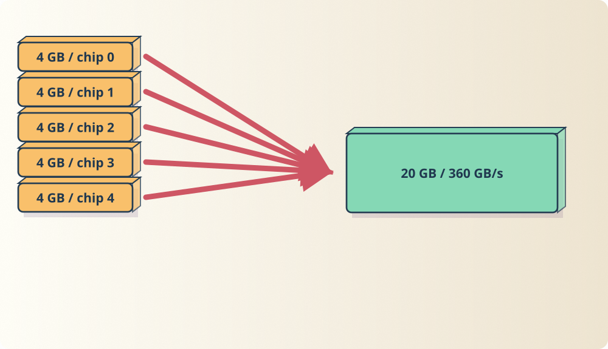
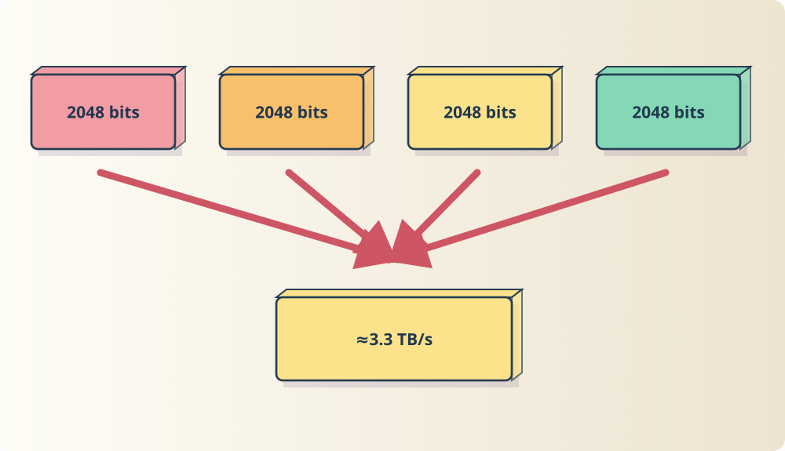
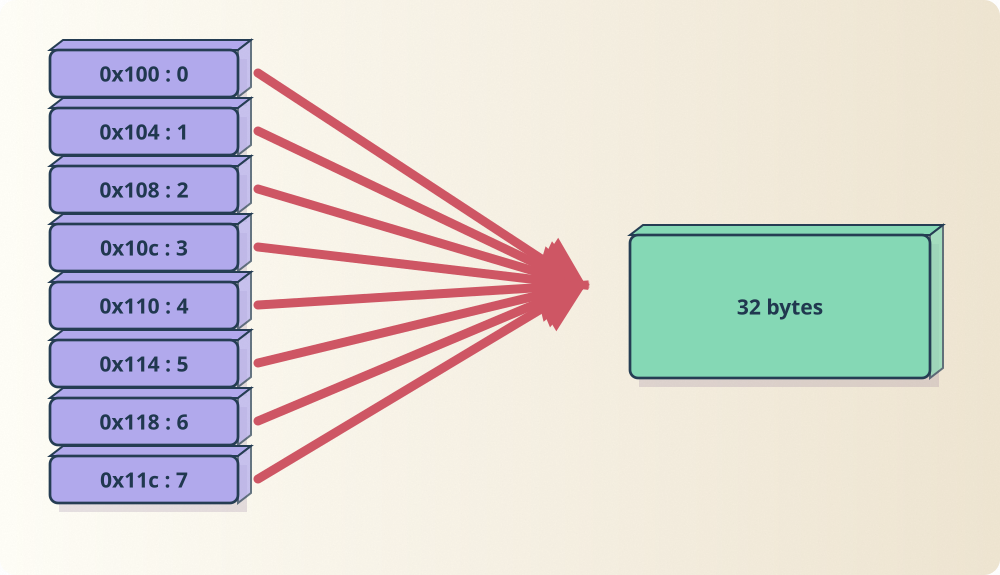
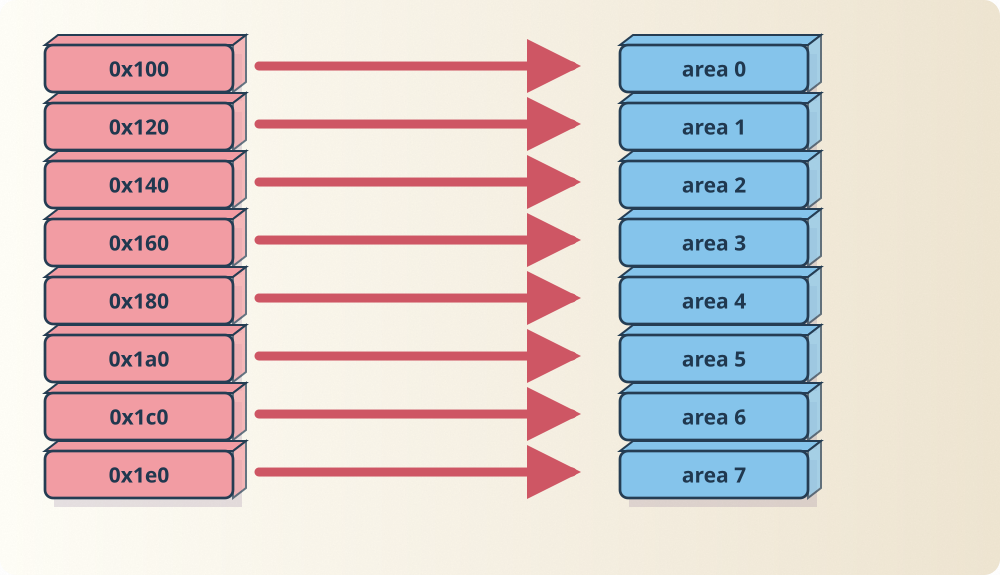
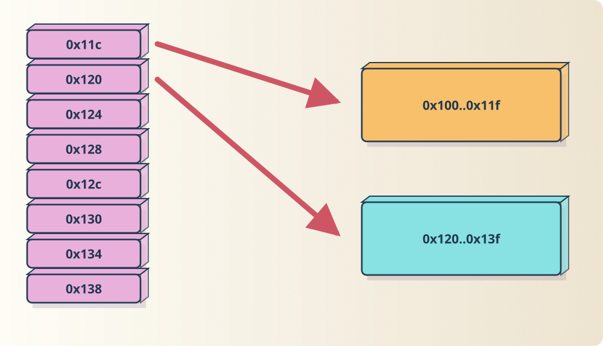
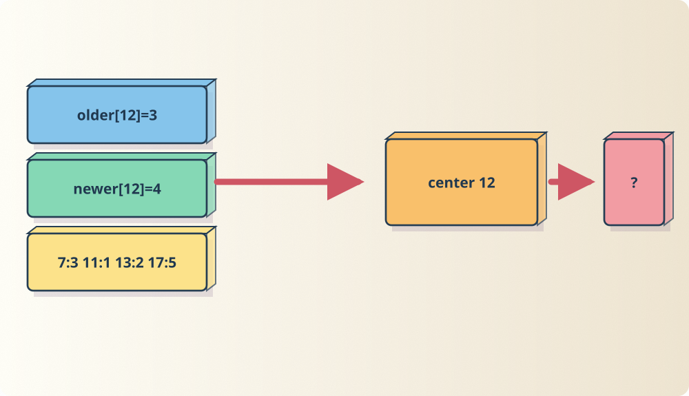
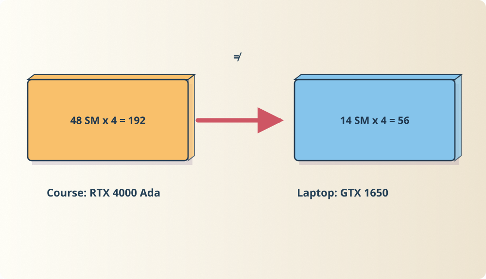

Lecture 3: memory
32 bits divided by 8 bits per byte equals ____ bytes. Fill before proceeding.










Pencil worksheet | Evidence | Struggles
Worked out in full on the exercise pages: 26, mod and divide | 27, which threads are neighbours in memory | 28, the shared base | 29, the naive wave step